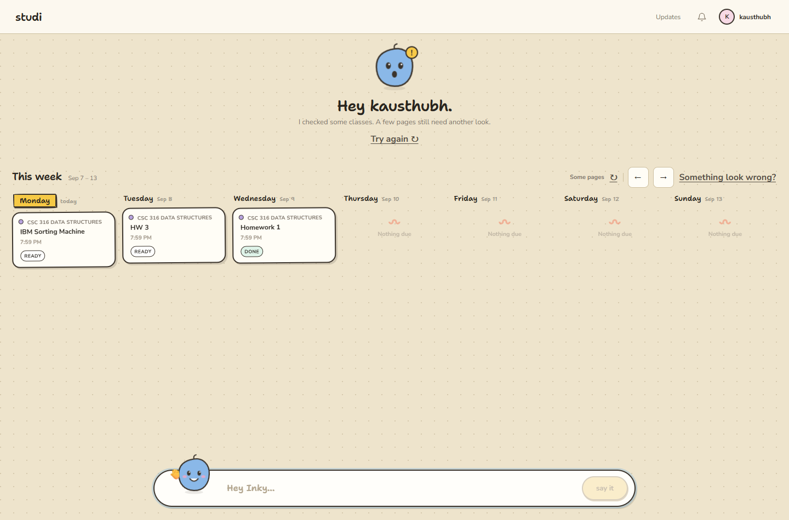
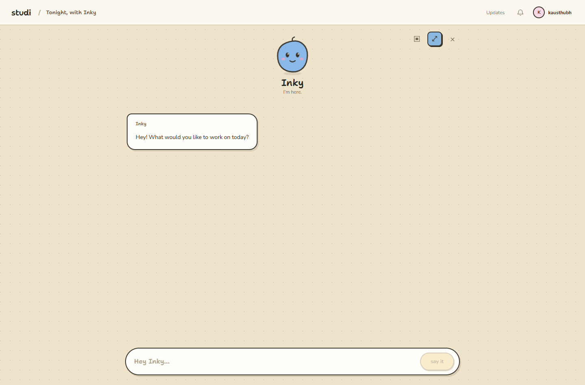

Seven days, previous/next week, inline refresh, retained assignments during scan errors, and undated work below the week.

One account-scoped conversation. Expanded chrome shows studi / Tonight, with Inky. No Week/Chat switch or separate desk entry.
A familiar conversation
Type @ to find an assignment, choose with the keyboard, then send. Minimize and reopen the same chat. The next draft stays intact while Inky replies. Stop creates an honest paused response; retry starts a new turn with the original text and references.
Your browser, beside the chat
The browser icon opens the native school pane. Existing execution state powers handoff, pause, resume, review, and saved-answer actions. The student signs in, chooses uploads, and submits in the school page; Inky does not show internal tool calls or reasoning in the conversation.
| Conversation | One home job per authenticated subject. SQLite stores accepted messages and assignment title snapshots; localStorage stores the account's current draft. Stable client message IDs deduplicate a retried IPC send. Interrupted turns receive a persisted recovery reply. Existing unowned legacy chat is not assigned to a newly signed-in account. |
|---|
| State & browser | ConversationCoordinator owns idle/thinking/typing and cancellation. React owns home/compact/expanded and the side pane. Native browser ownership remains in the existing execution system. Dialogs hide the guest view; closing them restores its measured bounds. |
|---|
| Calendar | Local-date Monday–Sunday ranges, including DST and year boundaries. Referenced assignments resolve by stable ID across weeks. The board keeps its saved results during refresh and distinguishes partial/failed scans. |
|---|
| Errors & telemetry | Human recovery text stays in chat. Main-process IPC failures, renderer chat failures, and failed agent traces reach PostHog error capture. Normal chat text, tool inputs/results, and trace metadata remain available for beta diagnostics. Passwords/tokens remain excluded. School guest pages are not replayed. PostHog error ingestion was verified against the Inky project: the actual QA runtime-not-ready IPC error appears in Error tracking. |
|---|
| Windows updates | Electron autoUpdater uses the fixed public repository feed. The release workflow includes RELEASES and full nupkg artifacts alongside the EXE. Check/download timeouts, check coalescing, first-run lock delay, and disposal guards prevent stale UI. Readiness survives a failed restart preparation. |
|---|
| Restart gate | A reply, scan, assignment, or handoff blocks restart. Preparation stops scheduling, asks the renderer to persist its draft, rechecks active work, then flushes telemetry with a bound. A preparation failure restores scheduling and leaves the downloaded update ready. |
|---|
| Unsigned Mac | Fetch release metadata, validate the exact official DMG asset, then open its download. Students replace the app manually. The app never claims that a browser download installed an update. Unsigned macOS auto-install is not offered. |
|---|
| Release boundary | Branch and PR only, plus manual GitHub Actions package builds. No version bump, tag, merge, or public release. An installed Windows A→B update and native macOS first-launch test remain separate release checks. |
|---|
Live feature pass: blocked, not passed
The first real scan failed with Unsupported service_tier: fast. The runtime now sends the provider-supported priority tier, with a real Pi request-builder regression test. Retrying the live scan is blocked by the development admission sync: the recreated QA user’s completed Clerk waitlist entry has no linked invitation, even after its separate invitation was accepted in a fresh isolated session, so the backend returns waitlist after restart. No assignments or completed scan were seeded.
The remaining proof is: resolve that admission state, restart the same profile, complete a real local-fixture scan, send and stop a real chat reply, exercise handoff/artifact actions, and restart to verify saved chat. Native installed update and Mac smoke tests also remain unproved.